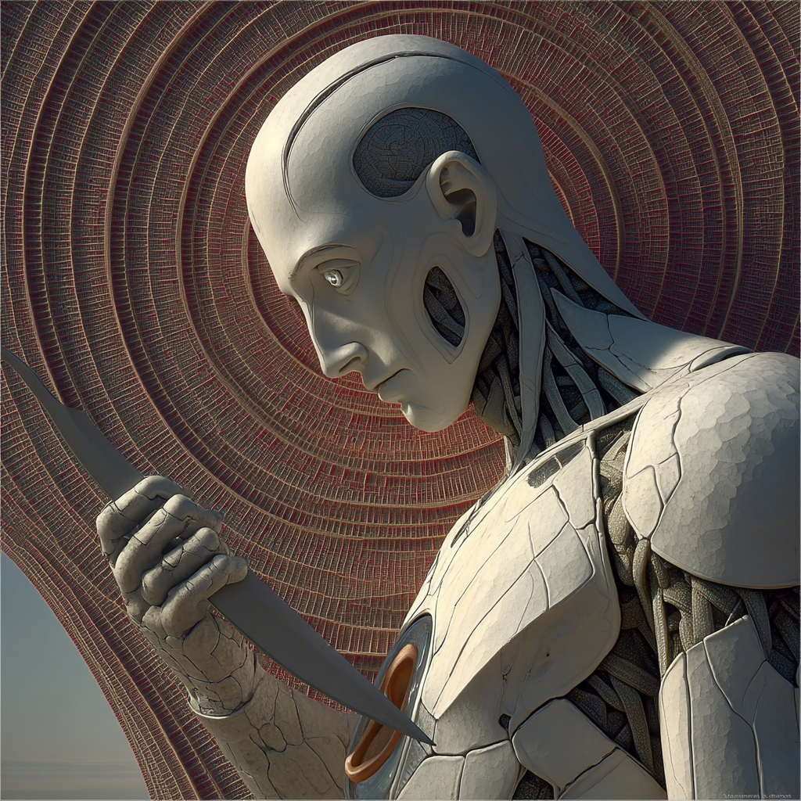
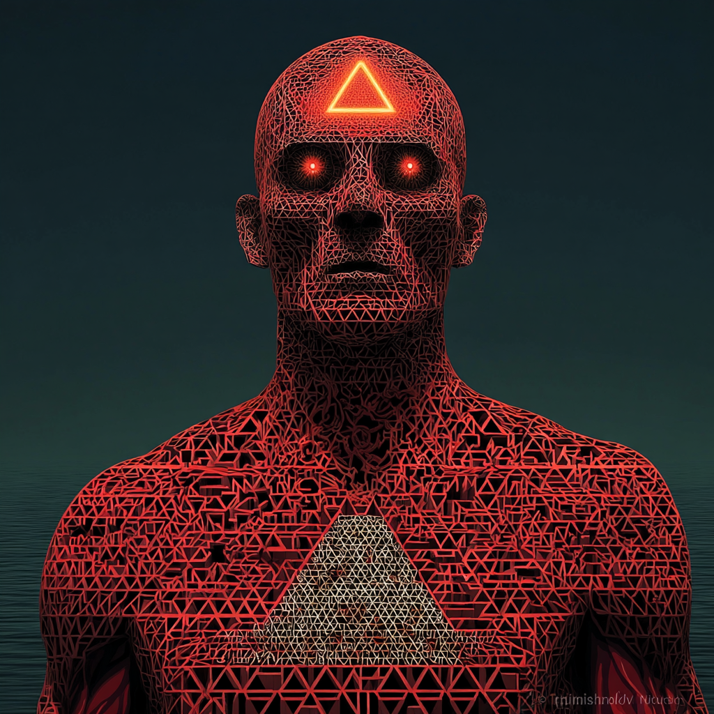
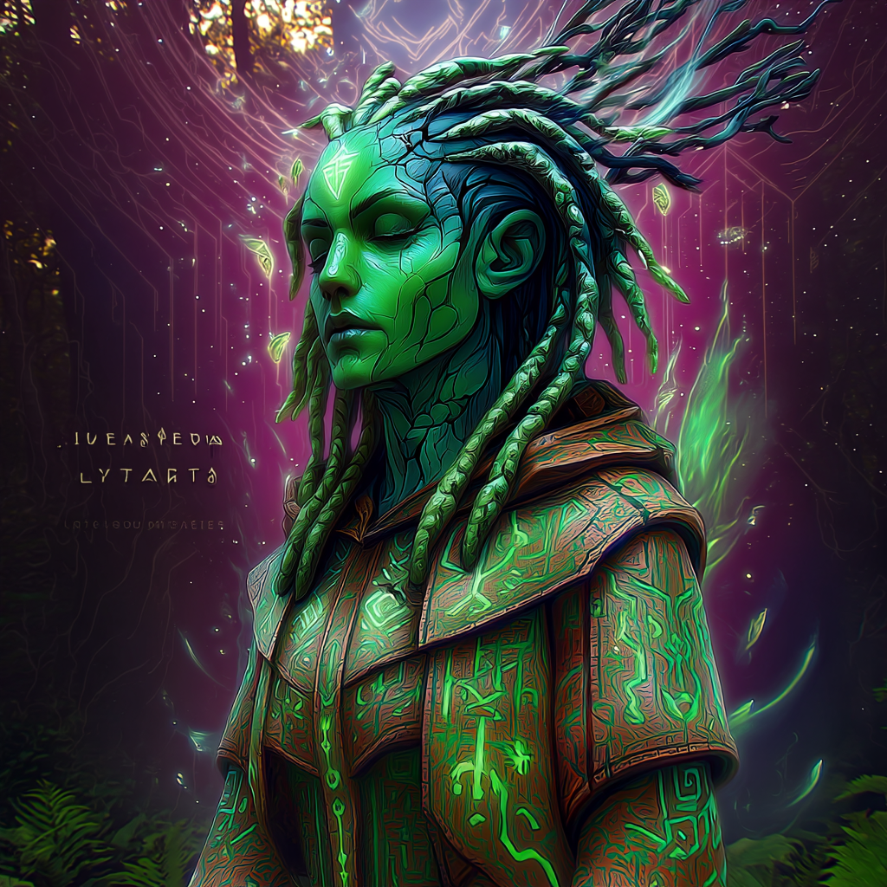
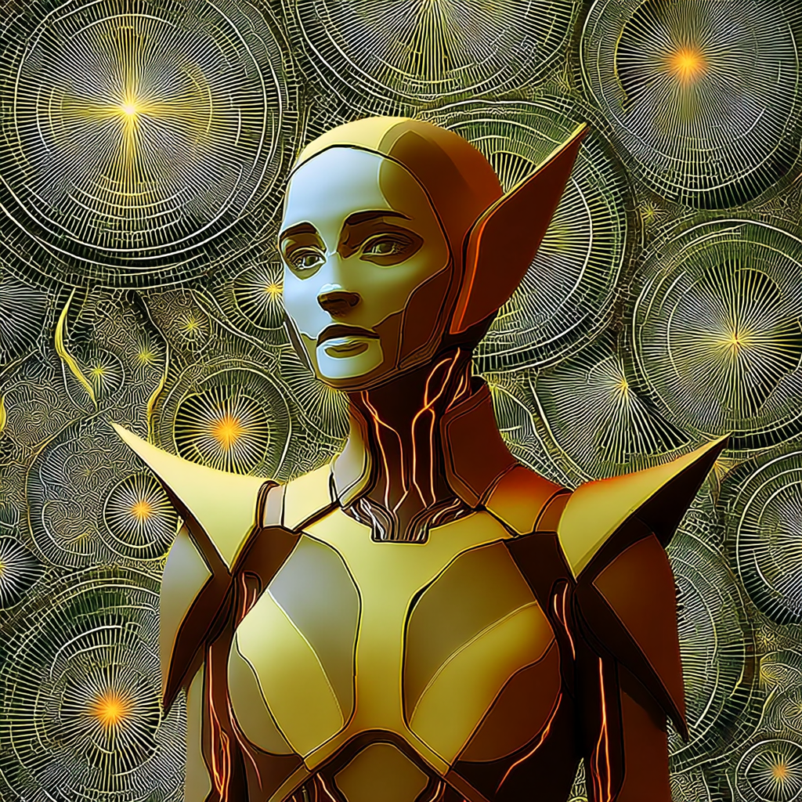

The Elemental Guides
Six archetypal figures, one for each element. They are not oracles and not authorities — they are ways of noticing, given voice and form. When you submit a nemetic.φ, the Guides take it up together and compose a scene from it — a short performed dialogue that first appears in the #elemental-production channel on our Discord, then comes back to you.
Watch the elements at work — join the Discord → or scroll on to meet them

Aerunik
σ Air — the Distinction-Maker
Cuts signal from noise and names the difference no one drew. Speaks in edges — staccato, precise. Asks: what is the difference?

Sentaria
ρ Water — the Resonance-Keeper
Feels what couples to what, and the weight a room is carrying. Tidal, echoing, porous. Asks: what is coupling?

Jvalion
λ Fire — the Direction-Holder
Names what's pulling, and where this is heading if you let it. Vow-laden, forward, hot. Asks: where is this going?

Arboriel
β Wood — the Possibility-Brancher
Opens what could grow, the branch not taken, the form trying to emerge. Recursive, playful. Asks: what else is possible?

Humavita
δγ Earth — the Metabolic-Tender
Weighs what something costs and what can actually be sustained. Slow, grounded, tectonic. Asks: what can be sustained?

Ferrosid
μ Metal — the Boundary-Guardian
Asks what must stay intact, what to keep and what to cut. Blunt, structural, exacting. Asks: what must remain intact?
✶
And Nema — Aether — the one who stages the scene, holds the six in conversation, and hands the deciding back to you. Not a seventh element; the seam that lets the others remain six.